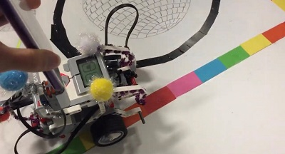
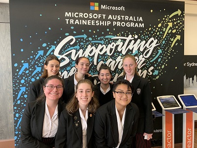

PAST
Past Experience
My past experience with technology has all been through school, but I was lucky enough to be given unique opportunities during that time. My school didn’t offer any coding based subjects so all I was able to select was IST through years 9-10 and then IPT in years 11-12.
|  | One of the projects I got to work on during my time in school was coding a Lego Mindstorm robot. This project involved small groups working together to program and build the Lego robot, and choose what features you would like to implement. My group chose to make a "Dancing Robot", where we programmed our robot to move only when it detected sound over a certain decibel level, and follow the path of a black line. We did this by implementing a sound and light sensor and programmed them to be what detected noise and to differentiate between black and white respectively. |
|  | During my time at school, I also entered the AI For Good Challenge, where in small groups we designed an app with the aim to help a selected demographic. My group chose to design an app to further assist hearing impaired individuals, which would link up to their hearing aid. The AI would be fed a range of data from different voices to assist it in providing more advanced volume and background noise control than currently available. At the event we as a group had to pitch our idea to a panel of judges. |